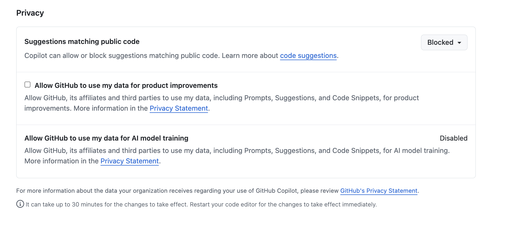

Getting Started with GitHub Copilot
Last updated on 2026-06-18 | Edit this page
Overview
Questions
- How should I configure AI coding assistants to protect privacy and intellectual property?
- How can AI help me understand an unfamiliar codebase?
- Which AI assistant mode should I use for a particular task?
- How can I use AI to investigate software architecture, dependencies, and implementation details?
- How can I customise AI coding assistants to follow project conventions and standards?
Objectives
- Configure AI coding assistants to protect privacy and intellectual property.
- Use AI assistants to understand an unfamiliar codebase.
- Construct effective prompts and manage context to improve AI responses.
- Explain the non-deterministic nature and limitations of AI-generated outputs.
- Customise an AI coding assistant to follow project conventions and standards.
- Critically evaluate AI-generated explanations and code recommendations.
- Use an AI assistants to identify opportunities for code improvement and refactoring.
Decide on Copilot Privacy Settings
Within GitHub itself, since Copilot’s VSCode configuration inherits from GitHub’s configuration, as a first step we can and should decide and configure a suitable level of privacy for how Copilot will operate; particularly if we are making use of sensitive or otherwise confidential data within our codebase.
We can set this within our GitHub user settings, which will apply to all we do with Copilot:
Select out GitHub profile icon at github.com, and select
Settingsand thenCopilot-
Scroll down to
Privacy:
Privacy settings within GitHub Copilot
By default, in the free tier, the first two are enabled.
In general, it’s a good idea to disable
Suggestions matching public code since the risk is that it
may make use of public code sources in a way that isn’t properly
licensed. In addition, it’s recommended to disable the other two
(depending on the extent you trust GitHub and their affiliates), since -
as it clearly states - they allow GitHub and others to use data and code
snippets for product improvements.
Asking Questions about Your Code
Attempting to understand a new codebase, whether it’s your first week on a project or one you have inherited from another source, can be difficult. This can be due to many reasons; documentation may be incomplete, architectural decisions may be undocumented, and the people who know the system may be unavailable or have left the organisation.
We can use Copilot to build our understanding and confidence about our codebase by asking natural-language questions about the code. It helps you:
- Build a high-level mental model of the system, which with complex codebases is often a huge task!
- Identify where key functionality is located in the code
- Understand naming conventions, patterns, and dependencies
- Reduce the cognitive load of first contact with unfamiliar code
Which sounds great, but with one critical caveat: it’s important to understand that Copilot is not an absolute source of truth, but more of a guide to help build your own understanding of a codebase.
Let’s use Copilot to help us investigate how our existing codebase works.
What Does the Patient Inflammation Data Contain?
Each dataset file in data/ records inflammation
measurements from a separate clinical trial of the drug, and each
dataset contains information for 60 patients, who had their inflammation
levels recorded (in some arbitrary units of inflammation measurement)
for 40 days whilst participating in the trial.
These datasets are reused from the Software Carpentry Python novice lesson.

Each of the data files uses the popular comma-separated (CSV) format to represent the data, where:
- each row holds inflammation measurements for a single patient
- each column represents a successive day in the trial
- each cell represents an inflammation reading on a given day for a patient
Using Copilot for the First Time
Let’s move over to using the VSCode pane on the right, labeled
Build with Agent. You’ll notice at the bottom there’s a
“chat” box, with a number of selectable dropdown options below it. You
can hover over each one to discover what it is.
On the left, there’s Set Agent, which allows you to set
the mode of operation with Copilot. Each of these modes provides an
increasing degree of autonomy for Copilot to interact with your
code:
-
Ask- designed for learning and orienting yourself with existing code without changing it. -
Agent- proposes concrete code changes for your approval based on your instructions. It’s useful when you already understand a codebase that you want to change. -
Plan- the most powerful mode, which lets you specify a high-level prompt to allow Copilot at a high level of autonomy to plan changes in steps, select files, and run tools or terminal commands, iterating on code edits until it is complete.
Since we want to ask questions regarding our codebase, let’s set the
mode to Ask.
The next dropdown is the AI language model being used. By default,
this is set to Auto so that Copilot will decide the model.
However, for consistency in this training, let’s select the entry for
Claude Haiki 4.5.
Select the inflammation-plot.py file in the File
Explorer. You’ll notice this appears as “context” at the top of the chat
box. Essentially, this is what we’re asking questions about.
Let’s now ask the very high level question:
What does this code do?, and press enter. You’ll likely be
asked whether you want to enable Claude Haiku 4.5 for all clients -
select Enable when prompted.
You’ll find the response looks something like the following:
This code generates visualization plots for inflammation data:
1. Loads data files: Uses glob to find all CSV files matching the pattern inflammation-*.csv in the ../data/ directory, sorts them, and limits processing to the first 3 files.
2. Processes each file: For each CSV file, it:
- Loads the data as a NumPy array using comma delimiters
- Creates a figure with 3 subplots arranged horizontally
3. Generates three plots showing statistical summaries across patients (rows):
- Left plot: Average inflammation values per day
- Middle plot: Maximum inflammation values per day
- Right plot: Minimum inflammation values per day
4. Saves output: Each figure is saved as a PNG file with the same name as the input CSV file plus .png extension.Why Aren’t I Seeing the Same Response?
You’ll likely find it’s not exactly the same. Due to the ways in which LLMs process requests, based on an iterative probabilistic model, responses based on the same question will show differences: so essentially, AI models are probablistic, not deterministic. This effect is often visibly compounded over time, as the probabilistic outcome of a response generates an increasingly different result.
Writing Good Chat Prompts
AI tools work best with context, so it’s good to be as specific and concise as possible.
It’s also a good idea to provide simple questions, so if you end up with a large question that is decomposable into separate steps, ask each step separately and you’ll typically get a better outcome. This implies that it’s good to use a logical, iterative process of using AI to assist, using responses to simple questions to inform the next question, and so on.
There’s a very useful cheat sheet developed by Northwestern University (US) Research Computing and Data Services, which can be found in their GitHub promptEngineering repository.
Managing Context
To improve the specificity of a prompt, it’s helpful to add as much context as you can.
To add context to a chat prompt you can type # followed
by the context item you want to add, such as a file, folder, tools, code
elements (such as variables, functions or classes), tools, amongst
others. Then press Tab to confirm. For example, we could
type #inflammation-plot.py to ensure only responses
relevant to that specific file will be generated. We could use
#codebase if we aren’t sure which files are relevant to our
question, to include all our files. Of course, our code may make use of
sensitive data files that we don’t want Copilot to use, which we’ll look
at shortly.
Another thing to remember is how the context of each chat informs the flow of questions. Copilot chat uses the history of a chat thread to get context about your request. To ensure you only provide the context you want, use separate threads for each new conversation area you wish to start, and delete requests that are no longer relevant or otherwise not useful.
Investigating our Codebase
Let’s ask some questions about our codebase so we can understand the implementation, in terms of the used components and how they work.
In the chat window, ensure that the FIXME model is
selected:
What are the main packages used?OUTPUT
1. glob: Built-in Python module for file pattern matching
- glob.glob() finds all files matching a wildcard pattern (inflammation-*.csv)
- Useful for batch processing multiple files with consistent naming
2. numpy: Numerical computing library
- np.loadtxt() loads CSV data into a NumPy array
- data.mean(axis=0), data.max(axis=0), data.min(axis=0) compute statistics across patients (rows) for each day (columns)
3. matplotlib.pyplot: Plotting library for creating visualizations
- plt.figure() creates a new figure window
- fig.add_subplot() adds subplots to the figure
- axes.set_ylabel() and axes.plot() configure and draw the plots
- fig.tight_layout() optimizes spacing
- fig.savefig() exports the figure as an image file
These three packages work together: glob finds the files, numpy processes the data, and matplotlib visualizes the results.This is a fairly typical response, although your output will vary.
Why Aren’t I Seeing the Same Results for the Same Question for the Same Codebase?
Sometimes, you may ask the same question and get a different response, even on the same machine in the same editor.
The reason is that LLMs are non-deterministic and probablistic: the same question can produce different answers. In addition to it’s probablistic nature, there are other reasons for these differences:
- Context-dependent: small changes in files, cursor position, or prompt matter
- Approximate understanding: infers intent, doesn’t actually “understand” the codebase
- Model changes over time: behaviour can shift as Copilot and it’s underlying models are updated
You’ll see the question is answered as a general summary, but it’s volunteering other information such as the individual library calls used and what they do. AI tools are generally quite good at summarising existing content which is helpful to build understanding, whether it’s written text or code, although we must be careful not to accept it entirely at face value. Such tools often have an authoriative tone and are known to be confidentally incorrect. Nevertheless, particularly for small to moderate sized codebases that use well-documented technologies that are well represented in their training data, these tools tend towards being really useful.
However, let’s assume we want to know more about how Matplotlib generates the plots:
How is Matplotlib used to generate the plots?This script uses Matplotlib to create and save visualization plots:
1. Create a figure: plt.figure(figsize=(10.0, 3.0)) creates a new figure with dimensions 10 inches wide by 3 inches tall.
2. Add subplots: fig.add_subplot(1, 3, n) creates a grid of 1 row and 3 columns, with n specifying which subplot (1, 2, or 3):
- axes1, axes2, axes3 are the three subplot axes objects
3. Label and plot data:
- axes.set_ylabel() adds a label to the y-axis
- axes.plot() draws a line plot of the data on that subplot
- Each subplot shows a different calculation: mean(), max(), and min()
4. Layout adjustment: fig.tight_layout() automatically adjusts spacing between subplots to prevent overlap.
5. Save output: fig.savefig() saves the entire figure as a PNG image file.Which is a fair summary.
Due to the ambiguous nature of language and how we specify prompts, and the nature of how LLMs operate and generate responses, we’ll typically have overlaps in responses to multiple questions. Again, the key is to isolate what’s useful, and drill down and be increasingly specific on questioning until we have what we need (as we would in an a typical conversation).
Personalising Copilot to Match our Project
What is an Instructions File?
GitHub Copilot can be personalised by adding a instructions file to a repository that tells Copilot how you want it to behave in that project.
The file acts as persistent, project-level guidance for Copilot, covering things like:
- Preferred architecture and design patterns
- Coding style and naming conventions
- Approved or banned libraries
- Testing expectations and quality standards
- Security or safety rules
- How detailed Copilot’s answers should be
By giving Copilot this shared context it helps make its suggestions more relevant for a particular project.
It serves a similar purposes to a CONTRIBUTING.md file
in a code repository; it provides guidance for how suggestions, code
changes and contributions should be made, but aimed at Copilot’s
day-to-day decisions instead. It does this by adding context to queries
from the .github/.copilot-instructions.md file.
For example, if we were to ask Copilot “How should I make this code more readable?”, without instructions Copilot may suggest to:
- Rename or format variable or function names inconsistently
- Change behaviour subtly in an undesired way
- Use an indentation style that isn’t typically used by team members
- Without instructions, Copilot may also introduce a new design pattern the repository doesn’t use
Create an Instructions File
Let’s create an instructions file now, by selecting the gear icon at
the top right of the CHAT panel, and selecting
Generate Chat Instructions. At this point, VSCode will do a
number of things in order to create this file:
- Analyse the structure and files in the workspace
- Analyse the data directory
data/which contains our inflammation data files - Create the
.github/.copilot-instructions.mdfile itself - Summarise the contents of the new instructions file
- Provide some questions for feedback to add more specific guidance in the instructions file
Note that it may request access to run a Bash command in the
data directory, from which it can then ascertain the
structure of the data, which you’ll have to approve. We’ll look at the
contents of the file in a moment.
You may also see and respond to some feedback questions, such as:
1. Should I add more detail about the other datasets (climate data, coordinates), or keep focus only on the inflammation data workflow?
2. Are there specific Python version requirements or package versions that should be documented?
3. Would you like guidance on handling edge cases (e.g., what happens with empty CSV files, missing columns)?Working with our Instructions File
You should now see a .github/copilot-instructions.md
file appear in VSCode’s file browser. If you open this file now, you’ll
see some things to note:
- Content is highlighted with a
Keep / Undooption. This is VSCode’s way of highlighting the changes Copilot has made as suggestions, so that you explicitly review and approve them. - A summary of the main code entry point, the data source directory, and the overall workflow of the application
- A section on the code patterns and conventions, essentially
generalising how the code works and providing assumptions on how it
operates,
e.g.
axis=0 consistently means aggregate across rows (patients), preserving measurement dimensions - Some suggestions on how to refactor (tidy) the codebase and otherwise enhancement it
Approve this file addition by selecting Keep.
From this starting point we are free to update this file manually as we continue to develop the code, and this context will be used whenever we interact with Copilot.
Obtaining Guidance on how to Improve our Code
Now have an instructions file to guide Copilot, let’s take its guidance one step further. So far we’ve been asking quite specific questions about this codebase in order to learn more about it. But let’s now consider we might want to do to improve it.
What about other Models?
So far we’ve only used the Claude Haiku 4.5 model, but
there are others at time of writing selectable from the models dropdown:
essentially some variants of GPT, and a Raptor model preview.
Next to each model you’ll see an x figure,
e.g. 1x. This is a multiplier related to the “cost” of
using this model within our quota of premium requests. So models with a
2x beside them will cost twice as much as one with
1x.
It’s important to be clear on the relative cost, since our quotas will be consumed more quickly with higher cost multipliers!
Asking Copilot to Suggest Improvements
5 mins.
- Select
+to create a new chat conversation - Ensure you have the
Askmode selected in the chat box, and theinflammation-plot.pyfile open and selected in the code editor - Select the
Claude Haiku 4.5model in the model dropdown. - Enter
How should I refactor this code to be more modular?into the chat.
Don’t update your code with any of the suggestions just yet!
Note that at the top of the response, it mentions three references are used:
-
copilot-instructions.md- as we would expect -
inflammation-01.csv- since it’s pattern is referenced in the source code -
inflammation-plot.py- since this is the file it’s taken as context
Your code can be made more readable by extracting the repetitive subplot pattern into a helper function and using a tuple/list to store the axes. Here's a refactored version:PYTHON
import glob
import numpy as np
from matplotlib import pyplot as plt
def plot_statistics(axes, data, stat_func, label):
"""Plot a single statistic on the given axes.
Args:
axes: Matplotlib axes object
data: NumPy array of inflammation measurements
stat_func: Function to compute statistic (e.g., data.mean)
label: Y-axis label string
"""
axes.set_ylabel(label)
axes.plot(stat_func(axis=0))
filenames = glob.glob('../data/inflammation-*.csv')
filenames.sort()
filenames = filenames[0:3]
for filename in filenames:
print(filename)
data = np.loadtxt(fname=filename, delimiter=',')
fig = plt.figure(figsize=(10.0, 3.0))
axes = [fig.add_subplot(1, 3, i) for i in range(1, 4)]
plot_statistics(axes[0], data, data.mean, 'average')
plot_statistics(axes[1], data, data.max, 'max')
plot_statistics(axes[2], data, data.min, 'min')
fig.tight_layout()
fig.savefig(filename + '.png')Key improvements:
- Helper function eliminates the three identical ylabel/plot blocks
- List comprehension replaces axes1, axes2, axes3 variables
- Docstring documents the function's purpose and parameters
- Maintains all existing functionality and conventions from your codebaseWhat’s my Copilot Usage?
It’s important to keep track of just how much of our Copilot “plan” we’re using, particularly since we’re (by default) on the free tier of Copilot. We can see an overview of what we’ve consumed and how much is remaining by selecting the Copilot icon (on the left of the bell-shaped icon on the far bottom right of the status bar), e.g.

So in this case, we can see that this user has consumed 0.3% of its quota for inline suggestions (which we’ll look at later), and 36% of the chat messages quota. This allowance resets on a monthly basis, in this case February 23 2026.
- Configure Copilot privacy settings to disable public code suggestions and data-sharing before use.
- Use
Askmode to explore and understand an unfamiliar codebase without making changes. - Copilot responses are probabilistic and non-deterministic, with the same question yielding different answers.
- Write specific, concise prompts and break complex questions into separate steps for better results.
- Use
#to add explicit context (such as files or folders) to chat prompts. - A
.github/copilot-instructions.mdfile provides persistent project-level guidance to Copilot for things like coding style and conventions. - Always critically evaluate AI-generated explanations and code, since they can be confidently incorrect.
- Monitor your Copilot quota, especially when using higher-cost models (marked with multipliers greater than 1x).